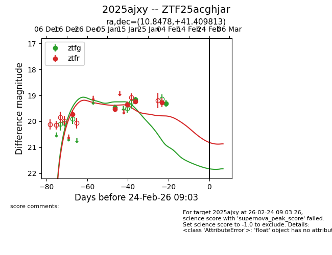
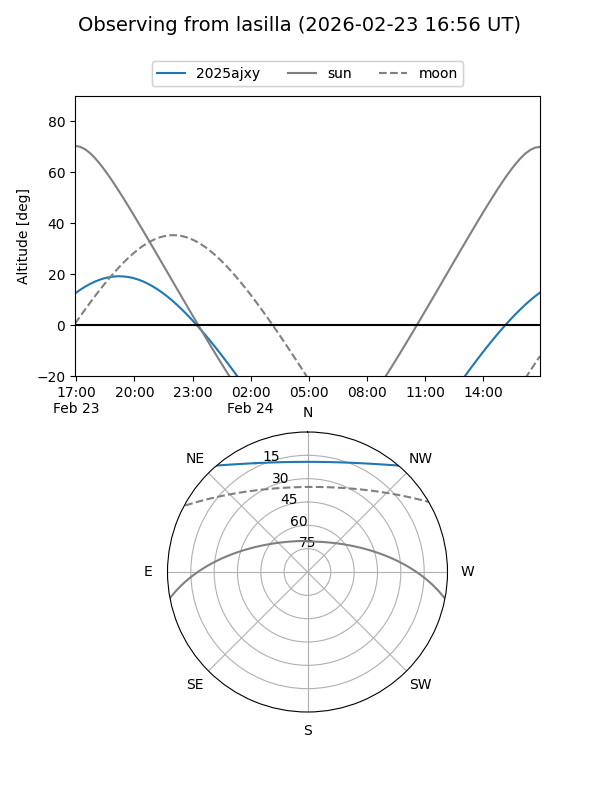
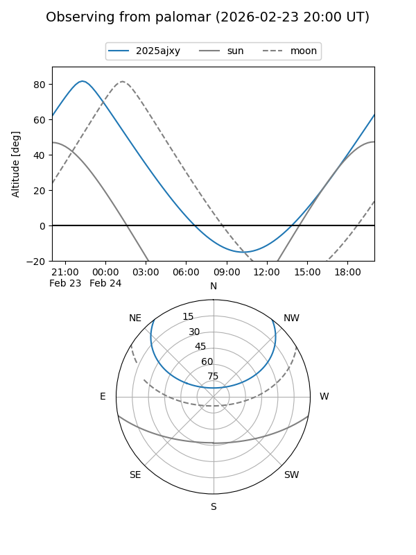
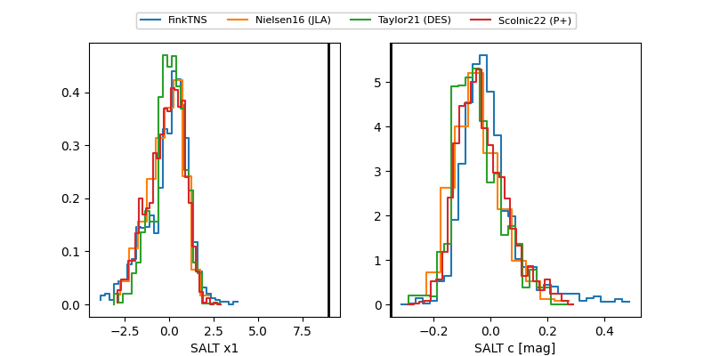

2025ajxy
Target 2025ajxy at 2026-02-24 09:08
Aliases and brokers:
FINK: link
Lasair: link
ALeRCE: link
TNS: link
YSE: link
alt names
ZTF25acghjar (ztf,fink_ztf)
2025ajxy (tns,yse)
Coordinates:
equatorial (ra, dec) = 10.8478,+41.40981
equatorial (HMS+DMS) = 00:43:23.47,+41:24:35.33
galactic (l, b) = (121.3111,-21.43661)
Flags:
Photometry:
last ztfg=19.32, ztfr=19.28
3 ztfg, 5 ztfr detections
Lightcurve

Visibility


Additional plots
